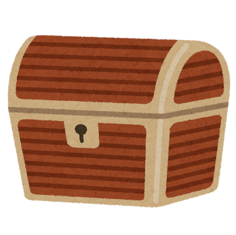
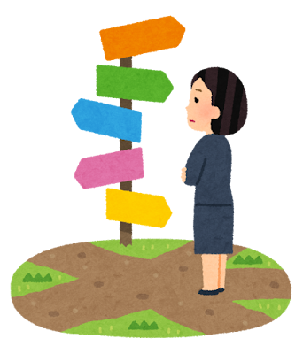
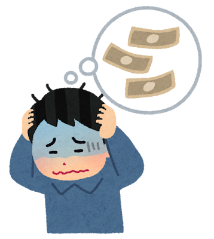
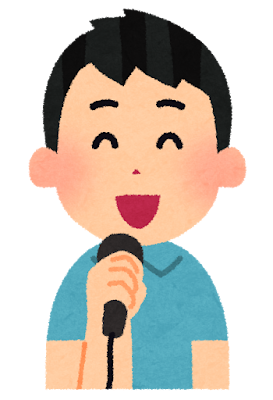
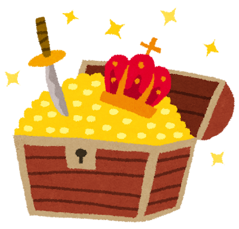
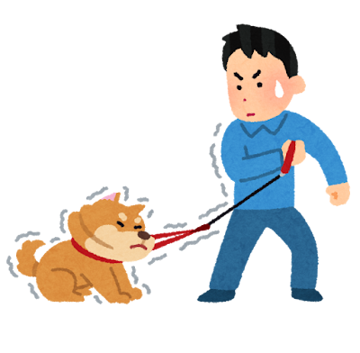
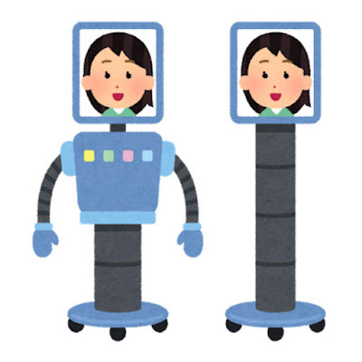
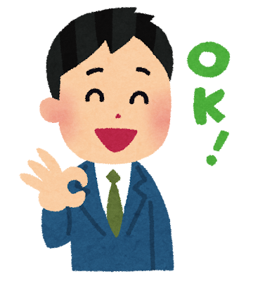
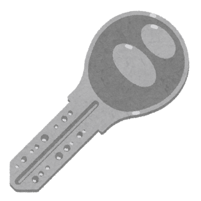
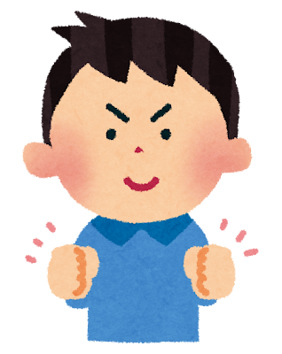

1日3問に、声で答えるだけ。
30日で、あなたの夢と
最初の一歩が言葉になります。



夢がないのではありません。
ふたをしているだけかもしれません。

ノートに向かって「夢を書きなさい」と言われても、ペンは止まります。
でも、質問されて声で答えるなら、言葉は意外と出てきます。
毎日3つの質問に、3〜5分話すだけ。話した内容は自動で文字になり、30日後には「私の取扱説明書」という1冊のノートにまとまります。
答えやすい質問から始まります。
うまく話す必要はありません。自動で文字になります。
夢・「無理」の理由・最初の一歩が、1冊にまとまります。
子どもの頃、時間を忘れてやっていたことは何ですか?
お金も時間も気にしなくていいとしたら、1年後、何をしていますか?
その「無理」の理由は、事実ですか? 思い込みですか?
全90問。正解はありません。「わからない」と答えてもOKです。
● 答えた日 ○ 休んだ日。休んでも、続きから再開できます。

夢を聞いて終わりではありません。「無理」と思った理由を、事実と思い込みに仕分けます。
仕分けてみると、思っていたより動かせるものが見つかります。
「いつか、船で世界を回ってみたい」
ずっと胸にしまっていた、そんな一言から計画が始まることがあります。
※イメージです。実在の利用者の体験談ではありません。

ノートを見返して、最初の一歩を自分のペースで。

ChatGPTやClaudeにノートを渡せば、毎回の説明は不要。決めるのは、あなたです。

同世代のコーチと、ノートをもとに面談。【料金・時間を記入】

※公開前に、実際の仕様と一致していることを確認します。
【自己紹介:本名または屋号、年代、コーチ歴、仕事】
AIが新しくなるたびに、自分のことを一から説明し直す。それに疲れて「自分の取扱説明書があればいいのに」と思ったのが始まりです。
同じように、忙しさの中で夢にふたをしてきた同世代の方に、まずひとりで、声に出してみるきっかけを届けたいと思っています。
使えます。質問に声で答えるだけです。設定に不安がある方には、お手伝いもしています。【サービス内容を確認】
いいえ。お送りするのは、公開のお知らせと特典だけです。不要になれば、いつでも解除できます。
いいえ。休んでも大丈夫です。続きから再開できます。
文字入力でも答えられます。【実装予定を確認】
大丈夫です。「うらやましかったこと」「やりたくないこと」からヒントを探す質問も用意しています。
事前登録は無料です。アプリの料金は【料金を記入】の予定です。
なりません。目標や考えの整理のためのものです。心身の不調がある場合は、医療機関にご相談ください。

さいごに事前登録の特典
【例:公開前に「最初の10問」を先行体験/先着〇名のモニター枠】
ご登録いただいた情報は、公開のご案内と特典のお届けにのみ使います。【プライバシーポリシーへのリンク】